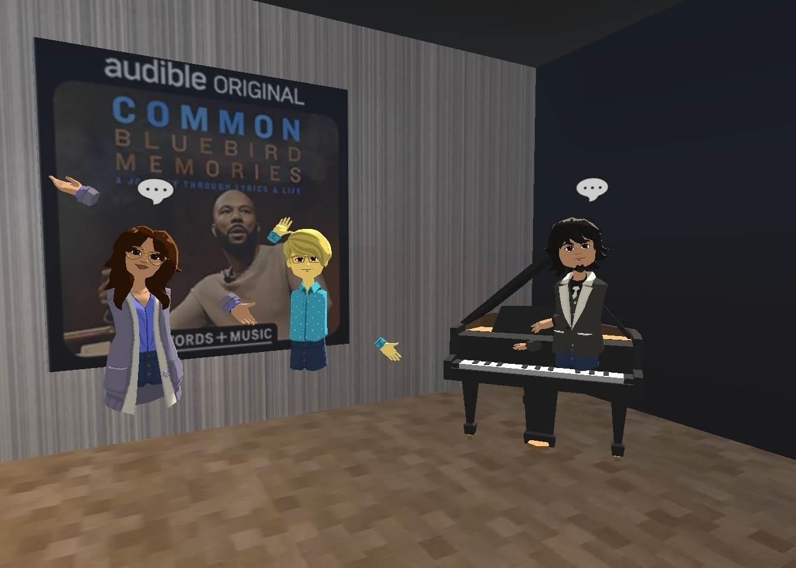

But the fun didn't stop there! We organized virtual get-togethers with colleagues who also had VR headsets, allowing us to explore our digital HQ together in real-time. And for those without VR, fear not—thanks to the Altspace desktop app, everyone could join in on the fun and experience the magic of our virtual headquarters. In a time when physical distance can feel isolating, our virtual HQ has become a beacon of connection and camaraderie. It's a reminder that even in the midst of a pandemic, technology has the power to bring us together and create unforgettable experiences. So, whether you're strolling through the digital streets of Newark or chatting with colleagues from afar, one thing is for sure—our virtual HQ is where the magic happens! [video mp4="../images/wp/2024/05/Audible-VR.mp4"][/video]